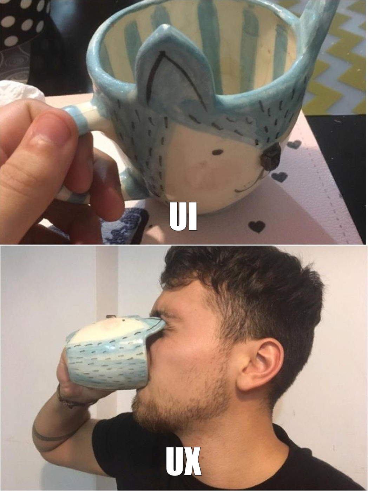
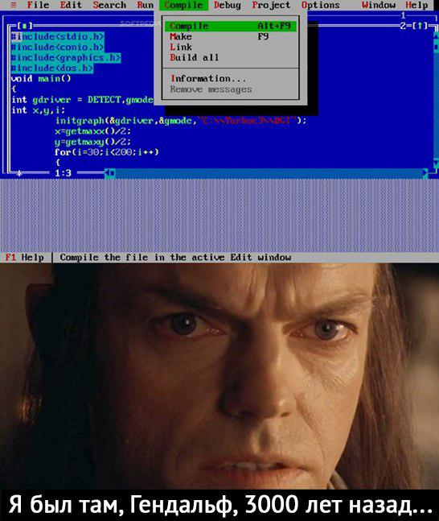
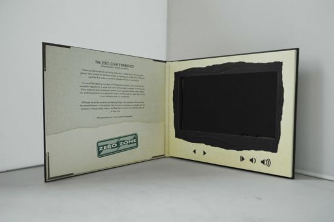
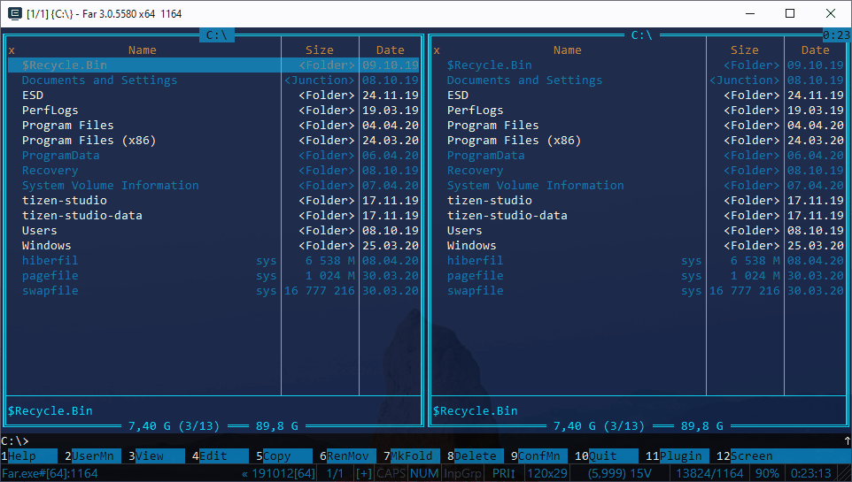
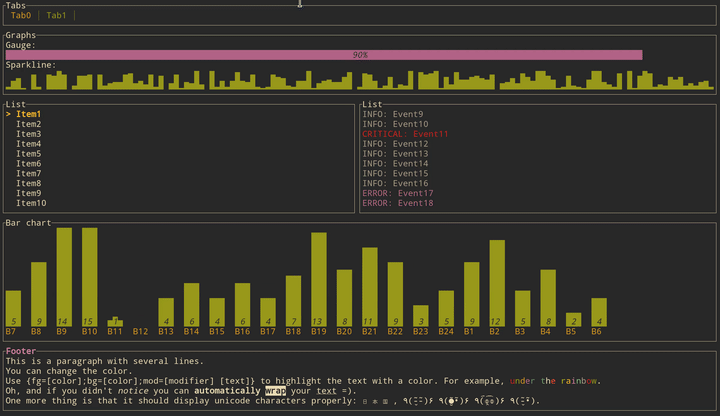

Fullscreen mode
Just press »F« on your keyboard to show your presentation in fullscreen mode. Press the »ESC« key to exit fullscreen mode.
Overview mode
Press "Esc" or "o" keys to toggle the overview mode on and off. While you're in this mode, you can still navigate between slides, as if you were at 1,000 feet above your presentation.
Unix/Linux
Lesson 6
Author: Egoshkin Danila Igorevich
Plan
- UX/UI (Stepanova N.I.)
- TUI (CLI)
- Bash scripts
- GUI
- Zenity
.gif)
UX/UI (Stepanova N.I.)
Dnipro Companies:
https://alef-estate.com/ru/
TUI (CLI)
TUI - Text user interfaceCLI - Command line interface

ASCII Art
⠄⠄⠄⠄⠄⠄⠄⠄⠄⠄⠄⠄⠄⠄⠄⠄⠄⠄⠄⠄⠄⠄⠄⠄⠄⠄⠄⠄⠄⠄
⠄⠄⠄⠄⠄⠄⠄⠄⠄⢀⣠⡄⠄⠄⠄⠄⠄⠄⢠⣄⡀⠄⠄⠄⠄⠄⠄⠄⠄⠄
⠄⠄⠄⠄⠄⢀⣴⣾⣿⣿⣿⣿⣶⣶⣶⣶⣶⣶⣿⣿⣿⣿⣷⣦⡀⠄⠄⠄⠄⠄
⠄⠄⠄⠄⢀⣾⣿⣿⣿⣿⣿⣿⣿⣿⣿⣿⣿⣿⣿⣿⣿⣿⣿⣿⣷⡀⠄⠄⠄⠄
⠄⠄⠄⠄⣾⣿⣿⣿⣿⣿⣿⣿⣿⣿⣿⣿⣿⣿⣿⣿⣿⣿⣿⣿⣿⣷⠄⠄⠄⠄
⠄⠄⠄⣼⣿⣿⣿⣿⣿⡿⠿⠿⣿⣿⣿⣿⣿⣿⠿⠿⢿⣿⣿⣿⣿⣿⣧⠄⠄⠄
⠄⠄⢠⣿⣿⣿⣿⣿⡟⠄⠄⠄⠈⣿⣿⣿⣿⠁⠄⠄⠄⢹⣿⣿⣿⣿⣿⡄⠄⠄
⠄⠄⢸⣿⣿⣿⣿⣿⣇⠄⠄⠄⠄⣿⣿⣿⣿⠄⠄⠄⠄⣰⣿⣿⣿⣿⣿⡇⠄⠄
⠄⠄⢸⣿⣿⣿⣿⣿⣿⣶⣤⣴⣾⣿⣿⣿⣿⣷⣦⣤⣶⣿⣿⣿⣿⣿⣿⣷⠄⠄
⠄⠄⢸⣿⣿⣿⣿⣿⠿⢿⣿⣿⣿⣿⣿⣿⣿⣿⣿⣿⡿⠿⣿⣿⣿⣿⣿⡟⠄⠄
⠄⠄⠄⠙⠻⢿⣿⣿⣷⡤⠈⠉⠉⠛⠛⠛⠛⠉⠉⠁⢤⣾⣿⣿⡿⠟⠉⠄⠄⠄
⠄⠄⠄⠄⠄⠄⠈⠉⠻⠁⠄⠄⠄⠄⠄⠄⠄⠄⠄⠄⠈⠟⠋⠁⠄⠄⠄⠄⠄⠄
⠄⠄⠄⠄⠄⠄⠄⠄⠄⠄⠄⠄⠄⠄⠄⠄⠄⠄⠄⠄⠄⠄⠄⠄⠄⠄⠄⠄⠄⠄
https://knightdanila.github.io/HuskyAsciiVision/
https://en.wikipedia.org/wiki/ASCII_art
ANSI art
TUI Now
Text-based game - Text Novels
Console in Portals
Console in Minecraft
Console in intellij
Movie: Big 1988 (Tom Hanks)
Movie: Big 1988 (Tom Hanks)

Movie: Big 1988 (Tom Hanks)
Win:Far and Lin:Midnight Commander
TUI
Bash scripts
Path?
#!/bin/bash
#!/bin/bin/bash
#!/usr/bin/env bash
#!/root/bash
Bash scripts
#!/bin/bash
# This is a comment
pwd
whoami | Win: hostname %username%
Reminder: chmod +x ./myscript
Bash scripts
#!/bin/bash
echo "$1 + $2 = $(($1 + $2))"
Bash scripts
T1='foo'
T2='bar'
if [[ $T1 == "$T2" ]]
then
echo 'условие выполняется'
else
echo 'условие не выполняется'
fi
Bash scripts
for i in "Номер "{1..10}
do
echo "$i"
done
Bash scripts
Cycle
for i in {1..10}
do
echo "Hi, there ""$i"
done
Bash scripts
declare -a arrAnimals
arrAnimals=(dog elephant horse cow fox koala turtle)
# Displaying the content of the array:
echo "${arrAnimals[@]}"
# Add a new element to the end of the arrAnimals array: "pig"
arrAnimals+=(pig)
# And again we show the contents of the array:
echo "${arrAnimals[@]}"
Zenity GUI
sudo apt-get install zenity
zenity --info --title “Check zenity”
chmod +x ./script.sh
Ex1 User Name
#!/bin/bash
name=$(zenity --forms --title="Create a user" --text="Enter your data" \
--add-entry="First Name" \
--add-entry="Last Name")
if [ $? = 0 ]; then
echo "User full name: $name."
zenity --info --title="User full name" --text="$name"
else
echo "User hasn't enetered a name and pressed cancel."
fi
Ex2
zenity --question --text "Do you want to add new contact?";echo $?
zenity --forms --title="Add new Friend" --text="Enter information about your friend" \
--separator=" , " --add-entry="First name" --add-entry="Last name" \
--add-entry="Email" --add-calendar="Birthday"
Ex3
#/bin/bash
value1=$(zenity --entry --title "Entry of a value" --text "Enter a value") #вводимо якись текст
value2=$(zenity --color-selection --title "Select a color") #обираємо колір
(zenity --info --text "you entered $value1 value and chosen $value2 color") #створюємо вікно виводу значень
Ex4
num=$(zenity --forms --title="Add Friend" \
--text="Enter information about your friend." \
--add-entry="First Name" \
--add-entry="Family Name" \
--add-calendar="Birthday " --forms-date-format='%Y-%m-%d' )
fname=$(echo $num | awk 'BEGIN {FS="|"} {print $1}')
sname=$(echo $num | awk 'BEGIN {FS="|"} {print $2}')
bir=$(echo $num | awk 'BEGIN {FS="|"} {print $3}')
result=$(zenity --info \
--title="Welcome" \
--text="Your friend: $fname $sname ,date: $bir " )
Ex5 Сафиюлин Александр
https://github.com/Chupakabra0
#!/bin/bash
file_name=$(zenity --file-selection --title="Choose file (Choose your destiny)")
properties=$(stat $file_name)
result=$(zenity --info --title="File properties" --width=300 --height=150 \
--text="File properties:\n $properties" --ok-label="Ok")
Ex{} Евгений Булгаков
#!/bin/bash
function FORM() {
local form=$(zenity --forms --title="Заполните форму" \
--text="Сбор информации" \
--separator="," \
--ok-label=Отправить \
--cancel-label=Закрыть \
--add-entry="Имя:" \
--add-entry="Фамилия:" \
--add-entry="E-mail:" \
--add-password="Ваш пароль (минимум 5-nь символов)" \
--add-password="Повторите пароль" \
--add-list="Ваше любимое Домашнее животное" --list-values="Кот|Собака|Попугай|Рыбы" )
local name=$( echo $form | awk -F ',' '{print $1}' )
local lastname=$( echo $form | awk -F ',' '{print $2}' )
local email=$( echo $form | awk -F ',' '{print $3}' )
local password1=$( echo $form | awk -F ',' '{print $4}' )
local password2=$( echo $form | awk -F ',' '{print $5}' )
local pets=$( echo $form | awk -F ',' '{print $6}' )
if [[ ${#name} == 0 ]]; then
zenity --warning --text "Пожалуйста, заполните поле имени"
FORM
return
fi
if [[ ${#lastname} == 0 ]]; then
zenity --warning --text "Пожалуйста, заполните поле фамилии"
FORM
return
fi
if [[ ${#email} == 0 ]]; then
zenity --warning --text "Пожалуйста, заполните поле e-mail'а"
FORM
return
fi
if [[ $password1 == $password2 ]]; then
if [[ ${#password1} == 0 ]]; then
zenity --warning --text "Пожалуйста, заполните поле пароля"
FORM
return
fi
if [[ ${#password1} < 5 ]]; then
zenity --warning --text "В Вашем пароле менее 5-ти символов"
FORM
return
fi
else
zenity --warning --text "Ваши пароли не совпадают"
FORM
return
fi
percent=0;
for num in 0% 10% 20% 30% 40% 50% 60% 70% 80% 90% 100%; do
echo $percent
echo "# $num"
percent=$(($percent + 10));
sleep 1
done | zenity --progress --title='Загрузка...' --no-cancel --auto-close --percentage=0 --width=80 --height=50
zenity --info --width=350 --height=150 --text "$lastname $name, мы знаем о Вас всё.
Ваш email - $email
Ваш пароль - $password1
Ваше любимое дом. жив. - $pets"
}
FORM
Links:
https://ryanstutorials.net/bash-scripting-tutorial/bash-input.phphttps://linuxhint.com/prompt-for-input-bash/